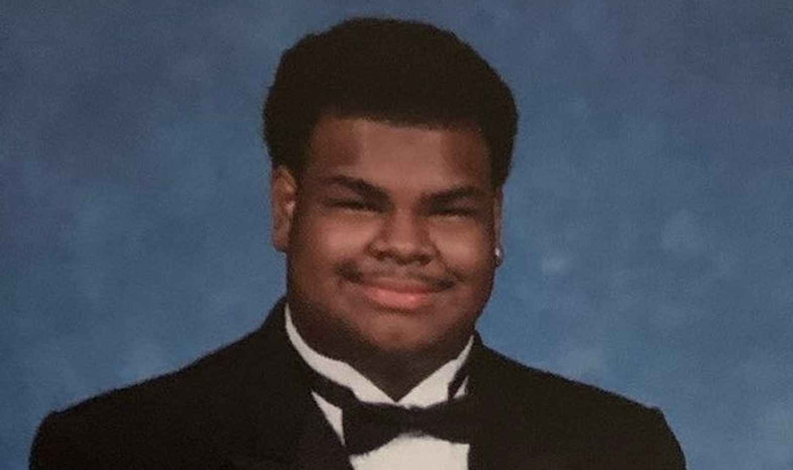
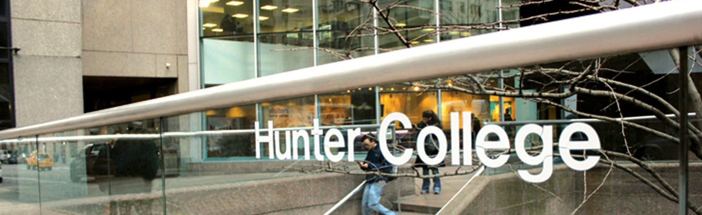
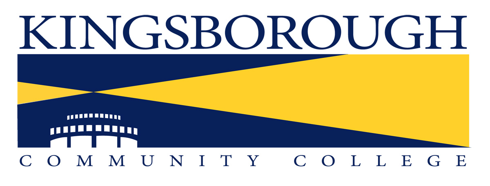
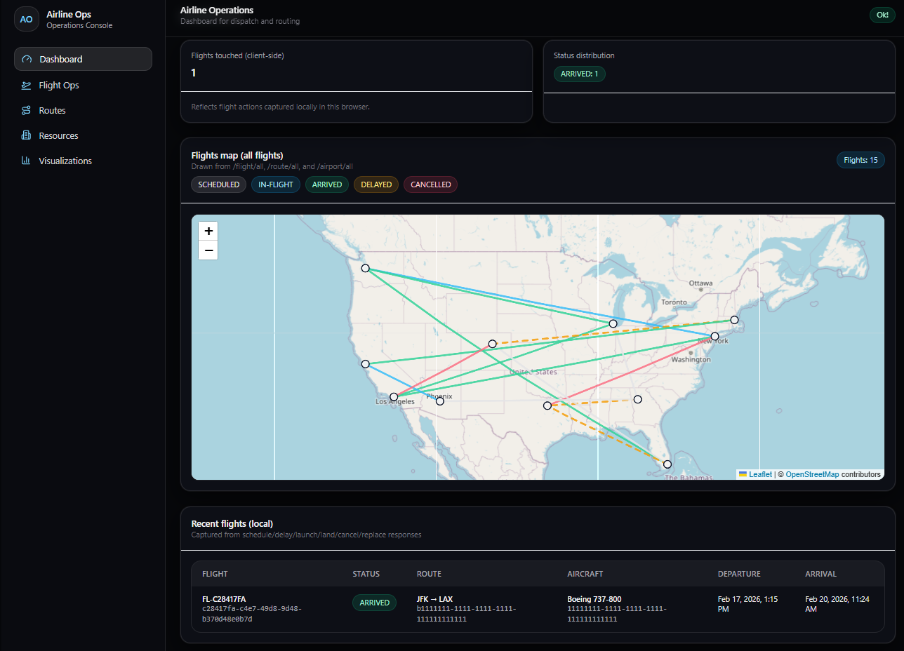
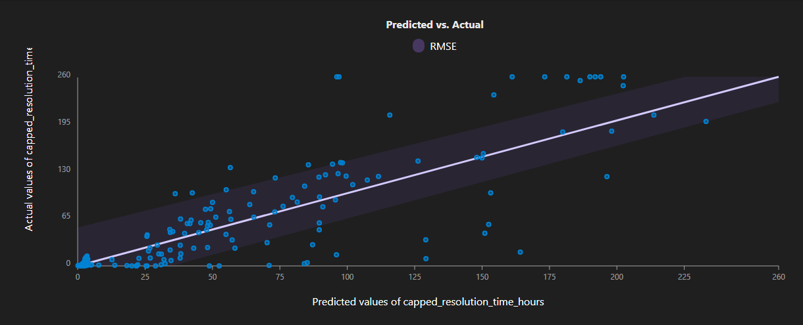
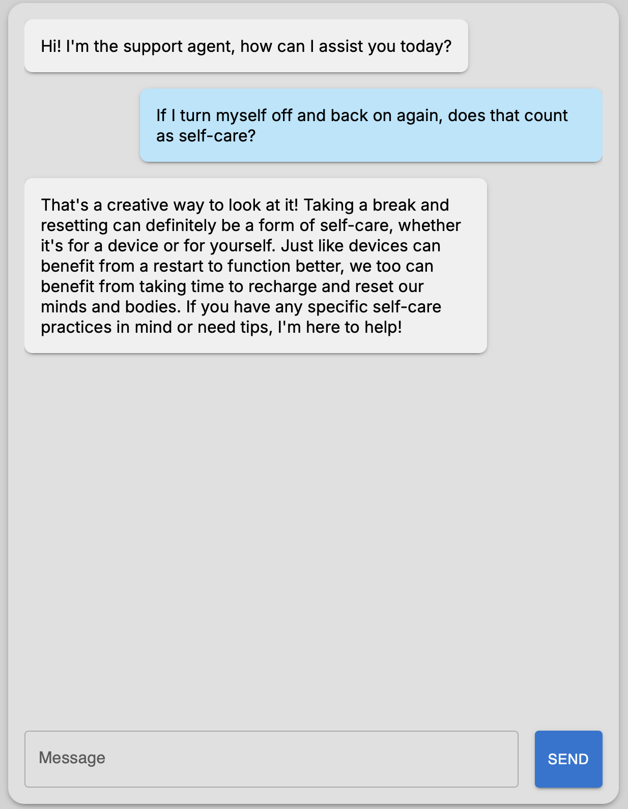
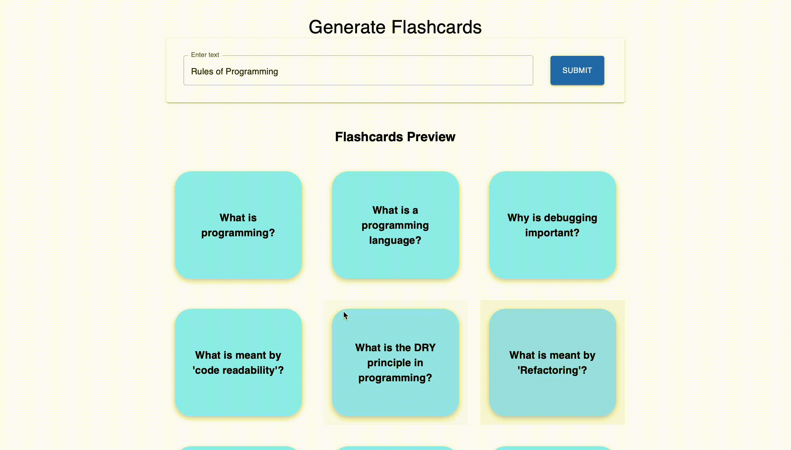
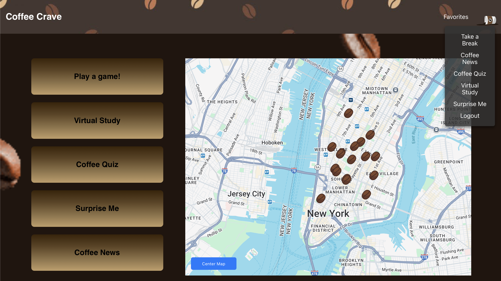

Intro

Nice to meet you! I'm a passionate programmer armed with a Bachelors Degree from Hunter College.
I know you've probably heard something along those lines too many times, so feel free to click here to see my experiences or here for my projects to skip the rest.
Technical Skills:
I am proficient in C++, Java, Python, HTML, CSS, and JavaScript. Additionally, I have a good grasp of various other languages and technologies that enhance my versatility.
Personal Goal:
My passion for programming began with scripting in games, where the thrill of building something from the ground up sparked a deep-seated love for the process of creation.
This early experience solidified my desire to pursue a career in this field. My ultimate goal is to collaborate with a talented team, working together toward a shared vision that benefits and simplifies the lives of others.
I am driven by the prospect of contributing to meaningful projects that have a significant impact. I envision myself as part of a dynamic team, tackling complex challenges and developing innovative solutions.
The opportunity to work on large-scale projects that make a real difference is where I see myself in the future. I am committed to continuous learning and growth, striving to achieve excellence in everything I do.
Personal Insight:
One thing about me is my love for knowledge. If you're a hiring manager who's read my responses, you've likely noticed this already. I constantly strive to learn new things and better myself because it brings me immense joy.
This drive has led me to partake in the SEO program, where I developed my skills in a professional setting, including technical interviews.
Additionally, I completed a Coursera course in Cybersecurity, which I find fascinating as a hobby, earning a certificate in the process.
Experience
I completed an intensive software engineering and AI-focused training program with Revature, where I built production-style backend systems and applied machine learning solutions.
My work focused on Python, SQL, and modern AI workflows, including retrieval-augmented generation (RAG) pipelines and data-driven applications.
Key contributions included:
Designed and developed a flight operations management system using Python, SQLAlchemy, and PostgreSQL, with Docker-based deployment
Built machine learning models using AWS SageMaker Canvas to predict NYC 311 complaint resolution times from over 550,000 records
Worked with data preprocessing pipelines using AWS Data Wrangler, handling missing data, outliers, and feature engineering
Developed backend-driven data visualizations using Matplotlib and integrated them into frontend systems via byte-stream encoding
Gained hands-on experience with APIs, database design, and scalable backend architectures

During a 5-week fellowship at Headstarter AI, I built multiple AI-powered applications using modern frameworks and APIs.
I developed full-stack applications using React, Next.js, and OpenAI APIs, focusing on real-time user interactions and scalable backend integrations.
This experience strengthened my ability to rapidly prototype and deploy AI-driven solutions while working under tight deadlines.
Worked at Altronix, gaining exposure to real-world engineering environments and cross-functional collaboration.
This experience helped me understand how software integrates with hardware systems and reinforced professional communication and teamwork skills.

Participated in a mentorship program with Microsoft, receiving guidance from a Cybersecurity Analyst on best practices in software development, debugging, and system optimization.
Improved time management, problem-solving skills, and the ability to adapt software systems to evolving requirements.
Contact
If you'd like to get in touch with me my email, and other socials are listed below:
Personal Email
College Email
College & Other Education
Received coaching and online instruction to achieve targeted interview, technical, and professional developmental goals. Learned all about business fundamentals to compete successfully for internship opportunities.
Completing industry-specific training focused on developing technical skills, institutional knowledge, and attention to detail.

I am a graduate from Hunter College with a Bachelors Degree in Computer Science.
Relevant Coursework:
OOP Python
Software Design & Analysis I - III (Including Data Structures and Algorithms) in C++
Web Development
Computer Architecture I - III
Operating Systems

I took 60 credits worth of classes while in highschool thanks to my highschool's program allowing me to secure my associates degree early.
Projects
⭐ Featured Project
Flight Operations Management System:
Tech Stack: Python, SQLAlchemy, PostgreSQL, Docker, Pydantic, Matplotlib

Built a backend system to simulate airline operations with real-time data visualization.
Repository
NYC 311 Resolution Time Predictor:
Tech Stack: AWS SageMaker Canvas, AWS Data Wrangler, Machine Learning

ML model predicting resolution time using 550K+ records, improving accuracy by ~15%.
Writeup |
Presentation
AI Customer Support Chatbot:
Tech Stack: React, Next.js, OpenAI API

Real-time AI chatbot with streaming responses and dynamic UI.
Live Demo
Repository
AI Flashcards Generator:
Tech Stack: Next.js, Firebase, OpenAI API

AI-generated flashcards with persistent storage and authentication.
Live Demo
Repository
Coffee Crave:
Tech Stack: React, Node.js, SQL, Firebase

Web app to discover coffee shops with authentication and API integrations.
Live Site